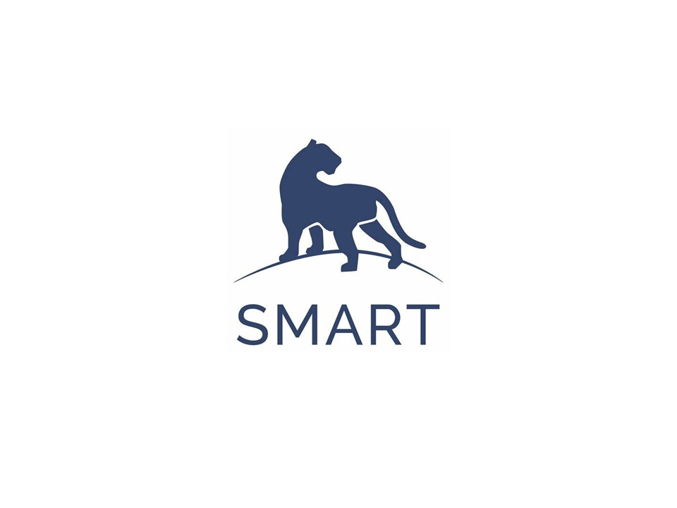

Tutorial
This guide serves as a comprehensive walkthrough for creating effective SMART reports
The Spatial Monitoring and Reporting Tool (SMART) is a powerful, customizable software suite designed for conservation area management. It is used at more than 1,100 sites in over 95 countries to support a broad range of activities, including biodiversity conservation, law enforcement monitoring, and community engagement (SMART Conservation Software 2024) SMART Conservation Software. 2024. How We Use SMART. https://smartconservationtools.org/en-us/SMART-in-Practice/How-we-use-SMART.
Read More →